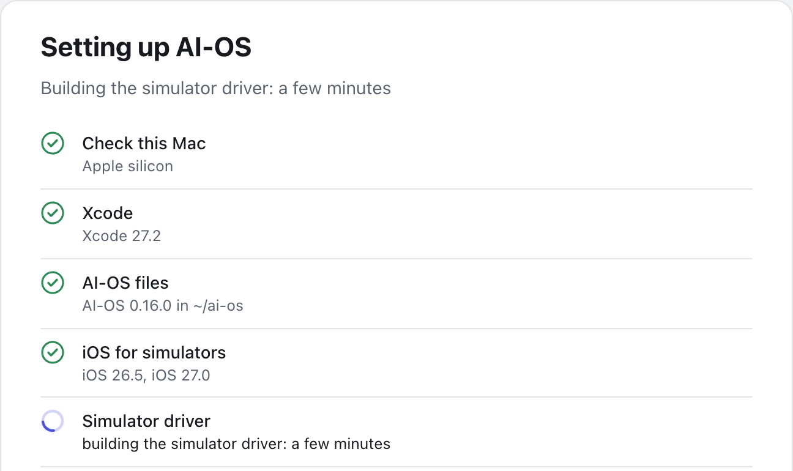
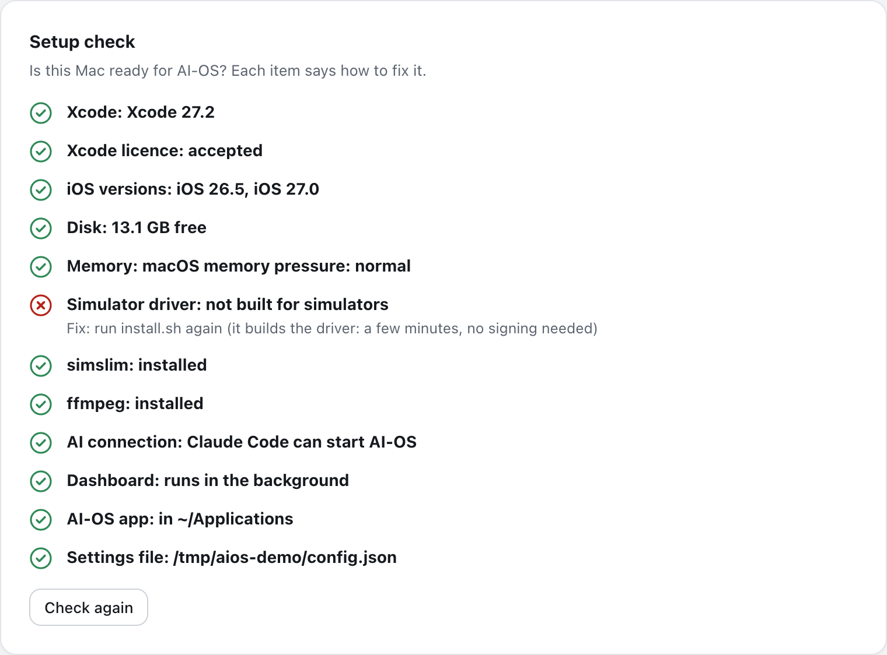
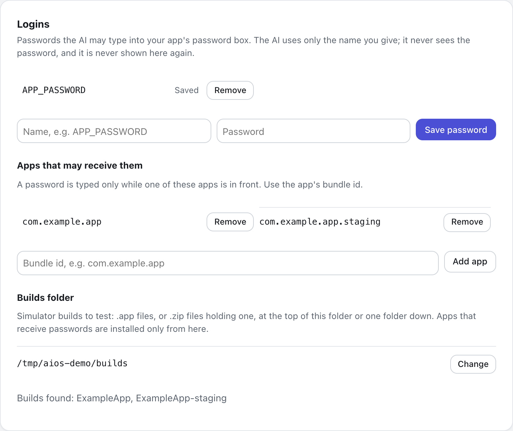
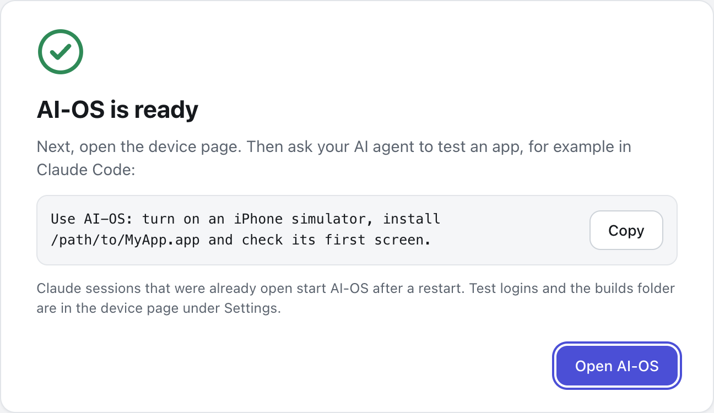

End-to-end iOS tests, run by your AI
Simulators and real iPhones, driven over MCP from Claude Code or Desktop.
Free and open source (MIT). A Mac with Apple silicon and Xcode.
terminate Contacts1.1 slaunch Contacts5.0 swait_for 'John Appleseed'814 mstap 'Add'1.2 swait_for 'New Contact'1.8 sfill 'First name'3.6 sfill 'Last name'3.5 sfill 'Company'3.5 stap 'Done'1.9 swait_for 'Mai Example'2.9 sback1.7 swait_for 'John Appleseed'395 msassert 'Mai Example'1.1 s
A test is a list of steps
{"tap": "Log in"}Taps only an enabled target.
{"fill": {"field": "Email Address", "text": "qa@example.com"}}Finds the box by label, types, checks.
{"type_secret": {"field": "Password", "key": "APP_PASSWORD"}}Types a saved password; replies show [secret].
{"wait_for": "Home", "timeout": 8}Waits by looking, never by sleeping.
{"assert": "Welcome"}Exact label or whole words, with case.
Questions, not hangs
A step that cannot go on asks your agent.
The first time
“Save Password?” covers the screen. The run returns a question; the agent answers and goes on.
Every time after
A rule taps through it.
{"when": "Save Password?", "tap": "Not Now"}Setup fetches iOS, the driver, simslim
No Terminal needed.

Setup
Installs what the Mac is missing, step by step.

Setup check
What is ready, and how to fix the rest.

Logins
Passwords by name. The AI never sees them.
Measured speed
43 to 45 s
A 30-step flow on three iOS 27 simulators at once, on an Apple M4 with 16 GB.
- Read the screen0.07 to 0.18 s
- A check0.05 to 0.3 s
- A tap step0.5 to 0.9 s
- A tap on an iPhone over Wi-Fiabout 1.4 s
The tools your agent calls
| Tool | What it does |
|---|---|
| aios_start | Turns devices on; installs an app clean. |
| aios_screen | The screen as text; an image on request. |
| aios_act | Runs steps; returns results or a question. |
| aios_run | Several devices at once, in the background. |
| aios_capture | Screenshot, video start and stop. |
Xcode, disk and an AI agent
- Apple silicon
- Intel Macs are not tested.
- Xcode
- Free. Setup opens the App Store if missing.
- Disk
- About 7.5 GB per iOS version, 1 to 2 GB per simulator.
- An AI agent
- Claude Code, Claude Desktop or any MCP client.
- A real iPhone
- Optional. A free Apple ID signs for 7 days.
Free for Apple silicon Macs
Setup ends with a first request to copy into Claude Code.
The first time, macOS asks you to allow it: Privacy & Security, Open Anyway.
